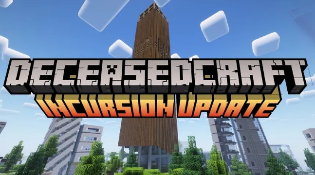
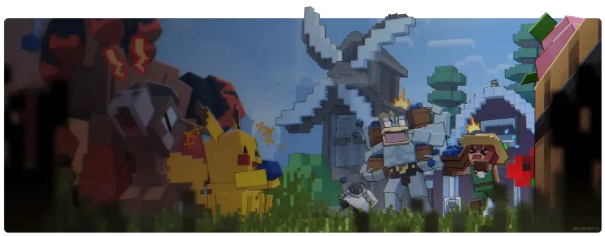
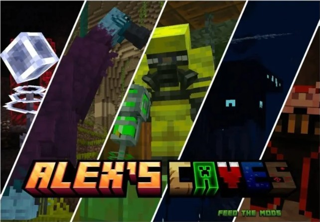
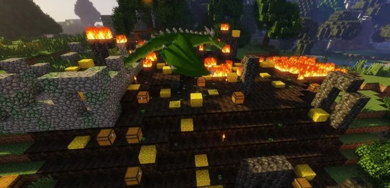
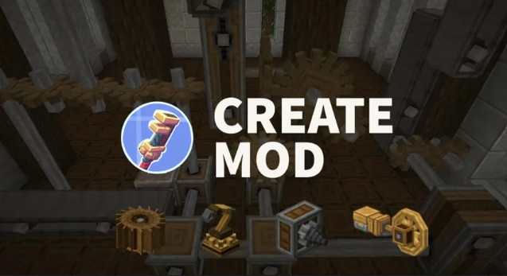
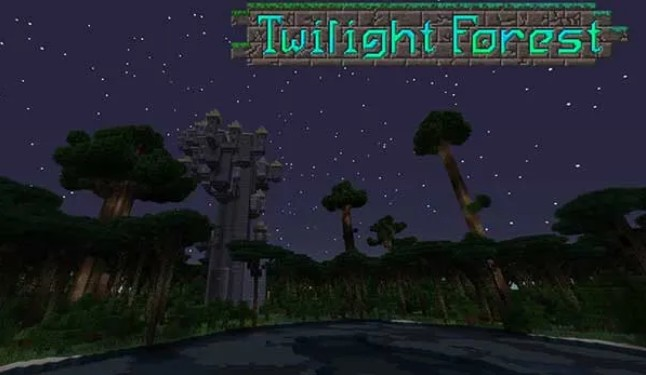

Galería de la Comunidad
Echa un vistazo a las capturas de pantalla de los mundos, biomas y criaturas más asombrosas descubiertas en cada modpack por nuestra comunidad de jugadores.

DeceasedCraft: Refugio fortificado contra las hordas nocturnas urbanas.

Cobblemon: Zona de descanso e iniciales listos para el combate.

Alex's Caves: Caverna profunda repleta de minerales y estructuras flotantes.

RLCraft: Un nido de dragón de fuego protegiendo tesoros en la superficie.

Create: Fábrica automatizada impulsada por ruedas de agua.

Twilight Forest: Enfrentando al Naga en la dimensión crepuscular.